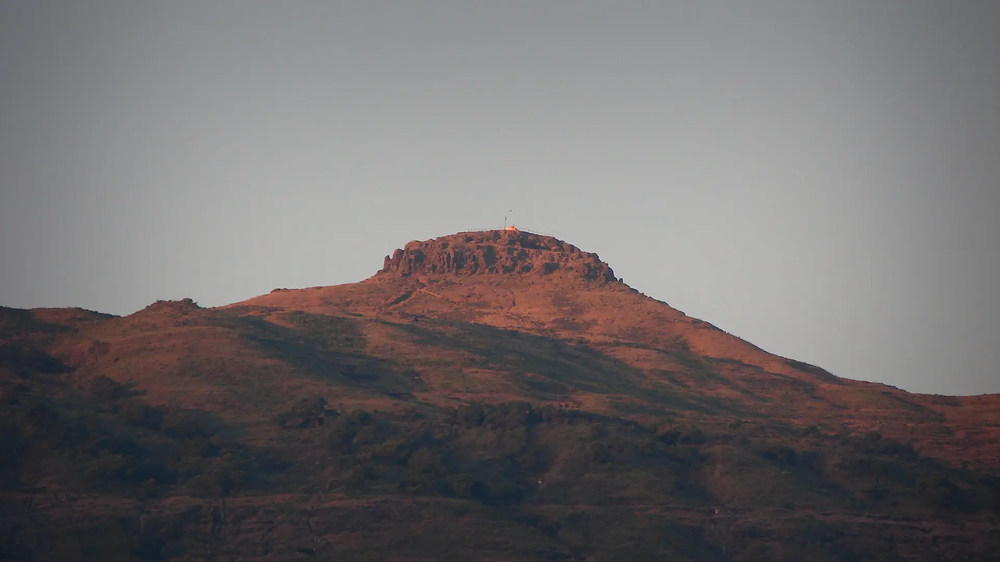

01Day 1 · Barikm 0.1
A climb by torchlight
By roadFrom Kasara · After the train from Mumbai
Train from Mumbai to Kasara, then the drive to Bari, the base village. Dinner, and then the climb starts in the dark.

Photo: Mvkulkarni23, CC BY-SA 3.0कळसूबाई · Ahilyanagar, Western Ghats
The trek in one line, and what you can do with it.
The "Everest of Maharashtra": a short, steep night walk with ladders near the top.
3 stops on the map, then the climb. Scroll the stops and the map follows.
01Day 1 · Barikm 0.1
By roadFrom Kasara · After the train from Mumbai
Train from Mumbai to Kasara, then the drive to Bari, the base village. Dinner, and then the climb starts in the dark.
02Day 2 · Kalsubai · 1,646 mkm 6.5
7–8Ladders · Iron, with railings
Up the last steep section on iron ladders to the summit temple of Kalsubai, at 1,646 m the highest point in Maharashtra, in time for sunrise.
02Day 2 · Barikm 12.9
8amLeave the top · After breakfast
Breakfast on top, then down by 8 am to Bari and the drive back to Kasara.
Best in Oct–Mar.
Dark: the months the trek’s sources call its best. Mid: possible. See all treks in October.
 Photo: Mvkulkarni23, CC BY-SA 3.0
Photo: Mvkulkarni23, CC BY-SA 3.0
Base prices from 4 operators’ own pages, per person. GST and travel are often extra. Treqz sells nothing.
₹750–1,199
The practical things, then the questions people ask.
One thing from each part of the packing list, so nothing big is missed. The full list, with where to rent and the daily rates, is on the 3D page.
The full packing list →


The CSMT–Kasara fast local leaves at 8:44 pm and reaches Kasara at 11:04 pm. It stops at Dadar, Thane and Kalyan.
Treks and TrailsFrom Kasara, a shared jeep to Bari costs about ₹2,600–3,000. Split it between 6 to 9 people.
Trekup IndiaIn the monsoon, 2,000–3,000 people can be on the trail. It gets slushy and slippery.
Trekup IndiaAbout 13.0 km of walking over 2 days on the trail.
The highest point is 1,646 m, about 590 m above the start.
Its sources grade it Easy.
Oct–Mar. It is also possible in Jun–Sep.
₹750 to ₹1,199 per person: base prices from 4 operators' own pages. GST and travel are often extra.
Signal is weak or absent around the base village.
Full-sleeve top, Full track pants, Jacket, Sun cap, Trekking shoes, Good torch and spare battery, Day backpack, 20–30 L, Water, 2–3 litres. The full list is on the 3D page.
Yes: Dec–Feb is among its best months.
Its sources grade it Easy and it takes 2 days on the trail, with a highest point of 1,646 m.
Sandhan Valley, Harishchandragad, Rajmachi, Rajgad to Torna, Kudremukh.


Treks in October · Treks in November · Treks in December · Treks in January · Treks in the Western Ghats · Beginner Treks in the Western Ghats · Winter Treks in India · Easy Treks in India for Beginners · Weekend Treks in India (1–2 Days) · 2 Day Treks in India · Kalsubai vs Harishchandragad · Kalsubai vs Sandhan Valley · Kalsubai vs Rajmachi · Free trek finder · All treks in 3D